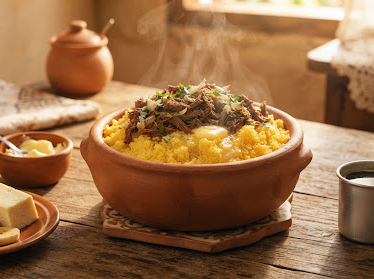
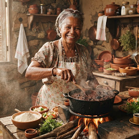

Culinária autêntica do sertão
O sabor fumegante e o abraço do Nordeste.
“Aqui a panela ferve no fogo brando, a manteiga é de garrafa e a mesa é farta de afeto.”

Sabor de brasaManteiga da Roça Pura- 100% SertãoOrigem Familiar
- ArtesanalPanela de Barro
- Nota 4.9+12 mil visitas
- Farinha Torrada no Ponto
- Manteiga de Garrafa de Alagoas
- Queijo Coalho de Venturosa
- Cachaça Branca & Amburana
O Cardápio da Casa
Pratos feitos no tempo certo, com generosidade e receitas herdadas de Dona Francisca.
.png)

Herança & amor à mesa
“Comida boa é aquela que abraça a alma antes de encher a barriga.”
Começamos com três mesas no Bairro do Recife e um fogão herdado. Hoje, continuamos comprando o milho do pequeno produtor, o queijo de Venturosa e a manteiga pura do sertão alagoano. Sem pressa, sem afetação, com respeito absoluto ao tempo das coisas.
-
Fogo na Lenha
Tempo e paciência para cada tempero apurar.
-
Agricultura Familiar
Apoio direto a mais de 40 sítios do Agreste.
-
Hospitalidade
Acolhimento sincero com café coado e prosa.
PORTAS ABERTAS
Encontre Nossa Mesa
Quatro endereços que respiram a cultura nordestina com afeto.
Recife Antigo
Rua da Moeda, 184 — Bairro do RecifeHorário: Ter a Dom, 11h30 - 23h
Tel: (81) 3224-8800
Olinda do Carmo
Ladeira da Misericórdia, 72 — CarmoHorário: Qua a Dom, 12h - 22h
Tel: (81) 3429-1120
Salvador Pelô
Largo do Pelourinho, 29 — Centro HistóricoHorário: Ter a Dom, 11h30 - 23h
Tel: (71) 3321-4450
Pinheiros SP
Rua dos Pinheiros, 830 — PinheirosHorário: Seg a Sáb, 12h - 23h
Tel: (11) 3081-0830
“Comer o cuscuz de Dona Francisca foi como me reencontrar com o quintal da minha avó...”
GUIA QUATRO RODAS
“O Raízes do Nordeste tem a mesma energia e maestria de Moqueca...”
“O Baião de Dois cremoso e a carpaccio de seriguela são imbatíveis. Ambiente acolhedor demais!”